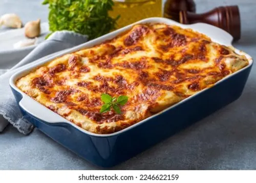
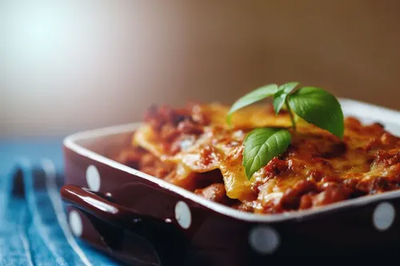

Lasagna

Description
Lasagna is a classic Italian baked pasta dish (pasta al forno)
consisting of stacked layers of wide, flat pasta
sheets alternating with fillings
such as ragù (ground meat and tomato sauce), béchamel sauce, vegetables, and cheeses like ricotta, mozzarella,
and Parmesan.
Popular variations
- Traditional Italian Style: Often features Bolognese ragù and béchamel sauce without ricotta
- American Style: Typically uses a ricotta cheese mixture layered with ground beef or sausage and tomato sauce.
Ingrediants
- Ground beef
- Italian sausage
- Crushed tomatoes
- Garlic
- Onion
- Basil
- Parsley
Steps
- Preheat your oven to 375°F (190°C).
- Brown the ground beef with garlic in a skillet, then stir in marinara sauce.
- Layer sauce, noodles, ricotta, and mozzarella in a baking dish; repeat.
- Cover with foil and bake for 25 minutes, then uncover for 10 minutes until golden.

Back home